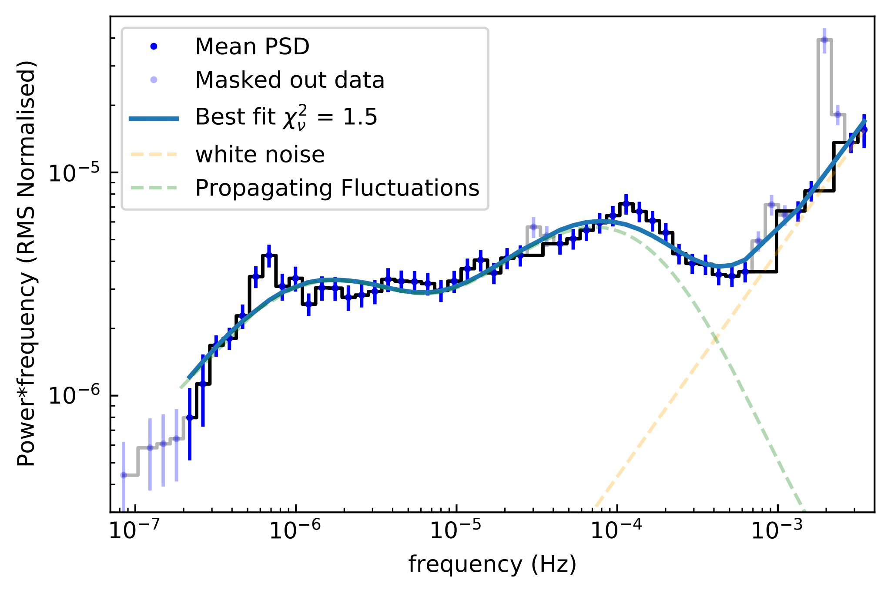
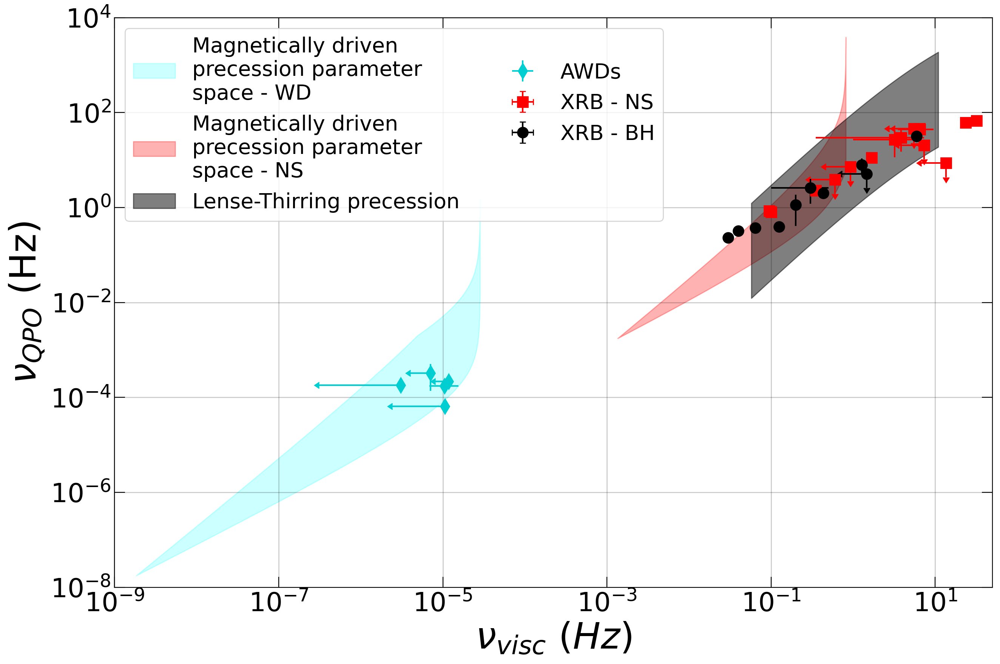

I am a PhD student in Astronomy
at the Centre for Extragalactic Astronomy at Durham University, UK
My research focuses on testing accretion mechanisms and their scaling variance. Accretion, the process by which matter accumulates onto a compact object, is vital for energy generation in various astrophysical systems. These systems range from white dwarfs, neutron stars, and black holes in X-ray binaries to protostars in young stellar objects and supermassive black holes in active galactic nuclei. A key feature shared by these objects is the presence of an accretion disc formed around the central compact object. However, the standard disc model often struggles to explain certain observations, particularly in the inner regions close to the compact object. Accreting white dwarfs are especially useful for studying accretion physics. Their relatively small size excludes relativistic effects, and their low-radiation environments allow for observations in optical wavelengths, which is often not possible for supermassive black holes due to the ultraviolet-heavy radiation field. To explore the inner workings of accretion flows, I analyse how the brightness of these systems changes over time, using data from space-based telescopes such as TESS and Kepler in the optical range, and XMM-Newton in the X-ray range. These brightness variations can reveal critical patterns in the behaviour of the accretion flow.
Studying broad-band variability power spectra of accreting systems is essential in understanding the geometry of the accretion disc. Using optical long term photometry such as TESS and Kepler allows probing of new timescales to greater depth. With Kepler we were able to tentatively probe the outer regions of the accretion disc in the most compact of system, such as the LISA verification binary SDSS J1908+3940 above. It shows a clear decrease of power at the low frequencies indicating vicinity of the accretion disc edge. Upcoming missions like PLATO will enable constraining similar and more detailed pictures of the accretion disc in much larger systems.
TESS also provides unprecedented view of periodic and quasi-periodic variability of accreting white dwarfs. Recently we have discovered a new type of quai-periodic oscillations (QPOs) in TESS observations of accreting white dwars that show direct analogy to well known QPOs in X-ray binaries. We propose that these QPOs are a results of a precessing inner flow of the accretion disc which is lifted up by the moderately strong magnetic field of the white dwarf, but not strong enough to create a magnetically confined accretion stream as observed in some cases. These newly discovered QPOs also follow the same linnear correlation as the X-ray binary QPOs, showcasing the scalability of accretion across all types of accreting objects.

With much of the TESS data still waiting to be leveraged to its full potential there is still much we can learn about accretion physics from accreting white dwarfs. In my recent study of the systematic broad band variability in TESS we have shown that the broad band structure is highly depenedent on the accretion rate and disc viscosity, outlining a clear difference in accretion disc structure for different types of accreting white dwarfs.
You can find a list of my first author and co-authored publications below or in this ADS library here
M. Veresvarska, S. Scaringi; Outer disc edge: properties of low-frequency aperiodic variability in ultracompact interacting binaries MNRAS 518, 5576 https://doi.org/10.1093/mnras/stac3470
M. Veresvarska, S. Scaringi;, S. Hagen, D. De Martino, C. Done, K. Iłkiewicz, C, Knigge, C. Littlefield; The peculiar bursting nature of CP Pup MNRAS 529, 664 https://doi.org/10.1093/mnras/stae573
J. A. Paice, S. Scaringi, N. Castro Segura, A. Sahu, K. Iłkiewicz, D. L. Coppejans, D. De Martino, C. Knigge, M. Veresvarska Evolution of spin in the intermediate polar CC sculptoris MNRAS 531, 1, L82 https://doi.org/10.1093/mnrasl/slae035
Z. A. Irving, D. Altamirano; S. Scaringi, M. Veresvarska, C. Knigge, N. Castro Segura , D. De Martino, K. Iłkiewicz Burst-induced spin variations in the accreting magnetic white dwarf PBC J0801.2-4625 MNRAS 530, 4 https://doi.org/10.1093/mnras/stae1103
P. J. Groot, S. Bloemen, P. Vreeswijk, J. van Roestel, P. G. Jonker, G. Nelemans, M. Klein-Wolt, R. Le Poole, D. Pieterse, M. Rodenhuis , W. Boland, M. Haverkorn, C. Aerts, R. Bakker, H. Balster, M. Bekema, E. Dijkstra, P. Dolron, E. Elswijk, A. van Elteren, A. Engels, M. Fokker, M. de Haan, F. Hahn, R. ter Horst, D. Lesman, J. Kragt, J. Morren, H. Nillissen, W. Pessemier, A. de Rijke, G. Raskin, L. H. A. Scheers, M. Schuil, S. T. Timmer, I. Arcavi, N. Blagorodnova, S. Biswas, R. Breton, H. Dawson, P. Dayal, S. De Wet, C. Duffy, S. Faris, Fausnaugh, A. Gal-Yam, S. Geier, A. Horesh, C. Johnston, R. A. D. Wijnands, D. Modiano, G. Katusiime, C. Kelley, A. Kosakowski, T. Kupfer, G. Leloudas, O. Mogawana, J. Munday, J. A. Paice, F. Patat, I. Pelisoli, G. Ramsay, P. T. Ranaivomanana, R. Ruiz-Carmona, V. Schaffenroth, S. Scaringi, F. Stoppa, H. Tranin, M. Uzundag, S. Valenti, M. Veresvarska, H. C. I. Wichern, R. A. M. J. Wijers, E, Zimmerman The BlackGEM telescope array I: Overview 10.48550/arXiv.2405.18923 https://ui.adsabs.harvard.edu/abs/2024arXiv240518923G/abstract
K. Iłkiewicz, S. Scaringi, M. Veresvarska, D. De Martino, C. Littlefield, C. Knigge, J. A. Paice, A. Sahu; Classifying Optical (Out)bursts in Cataclysmic Variables: The Distinct Observational Characteristics of Dwarf Novae, Micronovae, Stellar Flares, and Magnetic Gating ApJL 962, L34 https://iopscience.iop.org/article/10.3847/2041-8213/ad243c
S. Scaringi, K. Breivik , T.B. Littenberg, C. Knigge, P.J. Groot, M. Veresvarska; Cataclysmic variables are a key population of gravitational wave sources for LISA MNRAS 525, L50 https://doi.org/10.1093/mnrasl/slad093
I.M. McHardy, M Beard, E. Breedt, J. H. Knapen, F.M. Vincentelli, M. Veresvarska, V.S. Dhillon, T.R. Marsh, S.P. Littlefair, K. Horne, R. Glew, M.R. Goad, E. Kammoun, D. Emmanoulopoulos; First detection of the outer edge of an AGN accretion disc: very fast multiband optical variability of NGC 4395 with GTC/HiPERCAM and LT/IO:O MNRAS 519, 3366 https://doi.org/10.1093/mnras/stac3651
J. Šilha, Z. Matej, T. Hrobár, P. Jevčák, M. Verešvárska; Light curves application to space debris characterization and classification 2021spde.confE.116S https://ui.adsabs.harvard.edu/abs/2021spde.confE.116S/abstract
I believe in the importance of outreach and participation in non-research activities within the community. In Durham I have participated in many outreach initiatives, such as Durham Astronomy Girl's Day, Celebrate Science, and Schools' Physicist of the Year Award, sharing Durham's research with the public and the yoounger generation in particular. I have co-founded the Cakes for Good Cakes for Good initiative in the Durham Astronomy department which has been set up to bring people from different reserach groups together to form new connections in a safe and informal environment whilst raising money for charity. Since begining of the initiative in May 2022 we have collected well over £3000, which was donated to different charities picked by the members of the deprtment.